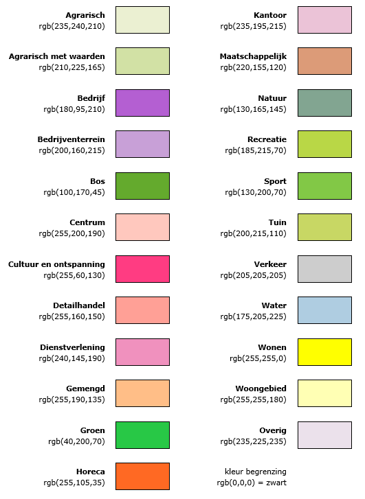
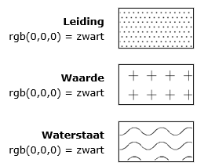

De Standaard Vergelijkbare Bestemmingsplannen bevat de normen die van toepassing zijn op de vormgeving en inrichting van bestemmingsplannen, inpassingsplannen en rijksbestemmingsplannen onder de Wet ruimtelijke ordening, met het doel om deze op vergelijkbare wijze op te bouwen en weer te geven. Dit hoofdstuk vormt een inleiding op de standaard.
1.1 Grondslagen in Wro, Bro en Regeling standaarden ruimtelijke ordening
Deze standaard is van toepassing op bestemmingsplannen, wijzigingsplannen, uitwerkingsplannen, provinciale inpassingsplannen, rijksinpassingsplannen en rijksbestemmingsplannen. Omwille van de leesbaarheid worden deze typen instrumenten in dit document samen aangehaald met de term bestemmingsplan, tenzij hier expliciet van wordt afgeweken.
In de Wet ruimtelijke ordening (hierna Wro) met bijbehorend Besluit ruimtelijke ordening (hierna Bro) heeft het bestemmingsplan een belangrijke rol als normstellend instrument voor het ruimtelijk beleid van gemeenten, provincies en het rijk. In de ministeriële Regeling standaarden ruimtelijke ordening (hierna Rsro) is vastgelegd dat de Standaard Vergelijkbare Bestemmingsplannen (hierna SVBP2012) de norm is voor de vergelijkbaarheid van bestemmingsplannen. Naast de SVBP2012 zijn ook het Informatiemodel Ruimtelijke Ordening (hierna IMRO2012) en de Standaard Toegankelijkheid Ruimtelijke Instrumenten (hierna STRI2012) normerend bij het vastleggen en beschikbaar stellen van bestemmingsplannen.
Conform Wro en Bro wordt een bestemmingsplan met de daarbij behorende toelichting in digitale geautoriseerde bronbestanden vastgelegd en in die vorm vastgesteld. Daarnaast kent de Wro een papieren versie van (hetzelfde) bestemmingsplan. Indien de inhoud van digitale stukken tot een andere uitleg leidt dan de stukken op papier, dan is de digitale inhoud beslissend. Het bestemmingsplan is daarmee een digitaal juridisch authentiek document. De informatie die is vastgelegd in het plan moet in elektronische vorm volledig toegankelijk en raadpleegbaar zijn. Dit wordt de digitale verbeelding genoemd.
De SVBP2012 geeft normen voor de opbouw van de planregels en voor de digitale verbeelding van het bestemmingsplan. De standaard heeft geen betrekking op de toelichting van het bestemmingsplan. Er worden geen normen gesteld omtrent de vormgeving en inrichting van de analoge weergave van het bestemmingsplan. De SVBP2012 heeft ook geen betrekking op de totstandkoming van de inhoud van een bestemmingsplan. Dit is de verantwoordelijkheid van het bevoegde gezag. In de SVBP2012 is wel aangegeven hoe de inhoud van een bestemmingsplan digitaal moet worden weergegeven.
1.2 Leeswijzer
In de volgende hoofdstukken zijn de normen voor de opbouw en de digitale verbeelding van het bestemmingsplan beschreven. Hoofdstuk 2 bevat de normen die van toepassing zijn op het bestemmingsplan als geheel, Hoofdstuk 3 de normen voor de in het plan voorkomende bestemmingen, Hoofdstuk 4 de normen voor dubbelbestemmingen en Hoofdstuk 5 de normen voor aanduidingen. Tot slot is in Hoofdstuk 6 vastgelegd op welke wijze planregels worden opgebouwd.
In dit document worden de volgende aanduidingen gehanteerd:
specificatie tussen <> haakjes : de gespecificeerde waarde wordt bepaald door de bronhouder;
specificatie tussen <<>> haakjes : de gespecificeerde waarde wordt gekozen uit een lijst;
specificatie tussen [] haakjes : de gespecificeerde waarde wordt letterlijk opgenomen;
[spatie] : er wordt een enkele spatie opgenomen;
rgb(x,y,z) : een kleurcodering. De codering is opgebouwd uit drie primaire additieve kleuren rood, groen en blauw. De hoeveelheid van een kleur loopt van 0 (niets van die kleur) tot en met 255 (alles van die kleur). Het eerste cijfer (x) geeft de hoeveelheid van de kleur rood aan, het tweede twee cijfer (y) geeft de hoeveelheid van de kleur groen aan, het derde cijfer (z) geeft de hoeveelheid van de kleur blauw aan.
2. Het bestemmingsplan
Dit hoofdstuk bevat de normen die van toepassing zijn op de vormgeving, inrichting en toegankelijkheid van het bestemmingsplan als geheel.
2.1 Opbouw van het bestemmingsplan
Het centrale onderdeel van een bestemmingsplan wordt gevormd door de bestemmingen, die altijd betrekking hebben op geometrisch bepaalde vlakken. Aan het in het plan begrepen grondgebied worden bestemmingen toegewezen met bijbehorende regels. De regels gekoppeld aan bestemmingen betreffen het gebruik (in ruime zin) van het in het plan begrepen grondgebied en van de zich daar bevindende bouwwerken. Kenmerk van bestemmingsplannen is dat het gehele plangebied bedekt is met bestemmingen. Bij inpassingsplannen die alleen iets toevoegen aan of verwijderen uit de vigerende bestemmingen en/of bijbehorende regels is de vereiste van een door bestemming vlakdekkend plangebied niet van toepassing. Ook bij een wijzigingsplan hoeft het plangebied niet volledig te worden bedekt door bestemmingen.
Een bestemmingsplan kan ook dubbelbestemmingen bevatten. Ook deze hebben altijd betrekking op geometrisch bepaalde vlakken. Dubbelbestemmingen overlappen bestemmingen en geven eigen regels, waarbij sprake is van een rangorde tussen de bestemmingen en de dubbelbestemmingen. De dubbelbestemmingen hoeven niet het gehele plangebied te bedekken.
Een bestemmingsplan kan ook aanduidingen bevatten om bepaalde zaken binnen een bestemming of dubbelbestemming nader of specifieker te regelen. Het gaat hierbij om specificaties met betrekking tot gebruik- of bouwmogelijkheden. De bestemmingen en aanduidingen hebben juridische betekenis en moeten altijd in de regels van het bestemmingsplan voorkomen.
Verklaringen hebben geen juridische betekenis en zijn om die reden geen onderdeel van het bestemmingsplan.
Ingeval sprake is van een gemeentelijk bestemmingsplan, waarvan het onderwerp gemeentegrens overschrijdend is, wordt dit plan voor elk van de betreffende gemeenten apart vastgesteld voor zover het haar eigen grondgebied betreft. Voor provinciegrensoverschrijdende plannen geldt dat eveneens, voor zover deze door meerdere provincies worden opgesteld.
2.2 Digitale verbeelding van het bestemmingsplan
De informatie die is vastgelegd in het plan moet in elektronische vorm volledig toegankelijk en raadpleegbaar zijn. Dit wordt de digitale verbeelding genoemd. De digitale verbeelding is de verbeelding van het bestemmingsplan in een interactieve raadpleegomgeving, waarin alle relevante bestemmingsplaninformatie wordt getoond: de combinatie van (plan)kaart en regels met de toelichting. Een raadpleger van het bestemmingsplan moet alle relevante bestemmingsplaninformatie op eenvoudige wijze voor ogen kunnen krijgen.
De relevante bestemmingsplaninformatie heeft betrekking op de bestemmingen, dubbelbestemmingen en aanduidingen met bijbehorende regels in het bestemmingsplan. Voor zowel bestemmingen als aanduidingen geldt, dat deze zonder interactie zichtbaar moeten zijn in de digitale verbeelding. Uit interactie met de digitale verbeelding blijkt dan de inhoud van de bestemming en/of aanduiding.
Bestemmingen, dubbelbestemmingen en aanduidingen moeten in alle interactieve raadpleegomgevingen op dezelfde en in deze standaard aangegeven wijze digitaal worden verbeeld door middel van kleuren en symboliek. De digitale verbeelding kent geen vaste indeling van de legenda. De wijze waarop de planregels in beeld worden gebracht, kunnen worden opgevraagd en gecombineerd, is niet aan regels gebonden. Bij het raadplegen van een digitale verbeelding moet het mogelijk zijn om te kunnen meten.
In een bestemmingsplanprocedure wordt gebruik gemaakt van een topografische ondergrond. Deze ondergrond maakt geen deel uit van het bestemmingsplan zelf. In de digitale verbeelding kunnen andere (topografische) ondergronden worden gebruikt dan de ondergronden die gebruikt zijn tijdens de procedure en bij de vaststelling.
In de digitale verbeelding wordt de begrenzing van het plangebied weergegeven met een ononderbroken bolletjeslijn, conform de specificatie in .
Dit hoofdstuk bevat de normen die van toepassing zijn op de vormgeving en inrichting van de bestemmingen in een bestemmingsplan.
3.1 Algemeen
Dit hoofdstuk is van toepassing op bestemmingen die ingevolge artikel 3.1 Wro aan gronden worden toegekend. Met een bestemming wordt tot uitdrukking gebracht welke gebruiksdoelen of functies, met het oog op een goede ruimtelijke ordening, aan de in het plan begrepen gronden zijn toegekend. Niet iedere functie leent zich voor een eigen bestemming. Of dit zo is, hangt af van de ruimtelijke relevantie, of wel van de mate waarin de betrokken functie invloed heeft op zijn omgeving of daaraan eisen stelt. Behalve om functies gaat het bij bestemmingen altijd om concreet ruimtegebruik of om fysiek aanwezige ruimtelijke objecten. Een bestemming heeft altijd betrekking op een geometrisch bepaald vlak. Bestemmingen in de vorm van een lijn of een punt komen niet voor.
3.2 Hoofdgroepen van bestemmingen
Ten behoeve van de eenduidigheid in de naamgeving en digitale verbeelding van bestemmingen is er een bindende lijst met hoofdgroepen van bestemmingen opgesteld. Als hoofdgroepen van bestemmingen zijn aangemerkt en mogen worden gebruikt:
Agrarisch;
Agrarisch met waarden;
Bedrijf;
Bedrijventerrein;
Bos;
Centrum;
Cultuur en ontspanning;
Detailhandel;
Dienstverlening;
Gemengd;
Groen;
Horeca;
Kantoor;
Maatschappelijk;
Natuur;
Recreatie;
Sport;
Tuin;
Verkeer;
Water;
Wonen;
Woongebied;
Overig.
Van iedere specifieke bestemming, voorlopige bestemming en uit te werken bestemming wordt door de bronhouder vastgelegd onder welke hoofdgroep deze valt. In de digitale verbeelding krijgen alle geometrisch bepaalde vlakken waar de bestemmingen, voorlopige bestemmingen en uit te werken bestemmingen betrekking op hebben, de kleur van de hoofdgroep waar deze onder valt, conform de specificatie in . De begrenzing van deze vlakken wordt weergegeven door een ononderbroken lijn. Er wordt in de digitale verbeelding geen gebruik gemaakt van lettercodes.

Figuur 2Verbeelding hoofdgroepen van bestemmingen
3.3 Naam van een bestemming
Iedere bestemming heeft een naam. Voor de naam van een bestemming zijn vier varianten mogelijk:
Variant 1 - naam van de hoofdgroep hanteren
De naam van de bestemming begint met een hoofdletter en is verder gelijk aan de naam van de hoofdgroep. De naam van de bestemming wordt als volgt opgenomen:
<<Naam hoofdgroep>> Voorbeeld: Agrarisch
Variant 2 - specifieke bestemmingsbenaming gebruiken
Nadere specificatie van een bestemming is mogelijk door achter de naam van de hoofdgroep een specifieke bestemmingsbenaming te zetten. Hierdoor ontstaat een aparte bestemming met eigen regels. Van deze mogelijkheid wordt gebruik gemaakt wanneer zich binnen dezelfde hoofdgroep functies voordoen die qua ruimtelijke kenmerken en effecten grote verschillen vertonen en het niet wenselijk is al die functies op een bepaalde plaats toe te laten. De naam van de gespecificeerde bestemming bestaat uit de naam van de hoofdgroep gevolgd door de naam van de specificatie.
Ten behoeve van de eenduidigheid in de naamgeving en digitale verbeelding van bestemmingen is een functielijst opgesteld die als separate bijlage naast deze standaard van toepassing is. In deze lijst wordt voor een aantal functies een vaste hoofdgroep voorgeschreven. Voor de functies in de functielijst zijn geen definities of voorwaarden met betrekking tot inhoud opgesteld. Als een specifieke bestemmingsbenaming wordt gekozen waarbij de specificatie op de functielijst voorkomt, dan moet de in de functielijst gegeven hoofdgroep worden gebruikt. Komt de specificatie niet voor op de lijst of is er geen hoofdgroep bij de functie gegeven, dan kiest de bronhouder zelf de hoofdgroep die het meest van toepassing is. In afwijking van de hoofdgroep zoals vastgelegd in deze functielijst kunnen in alle gevallen ook de hoofdgroepen Centrum of Gemengd gespecificeerd worden.
Een functie kan ook als functieaanduiding in elke gewenste bestemming worden gebruikt (zie paragraaf 5.3).
De naam van een gespecificeerde bestemming wordt als volgt opgenomen, waarbij de eerste letter van de hoofdgroep en de eerste letter van de specificatie beginnen met een hoofdletter:
<<Naam hoofdgroep>> [spatie] [-] [spatie] <Specificatie van de bestemming> Voorbeeld: Agrarisch – Akkerbouw
Variant 3 - Bestemming splitsen
Splitsing van bestemmingen wordt gebruikt wanneer zich binnen dezelfde bestemming geheel verschillende stedenbouwkundige situaties voordoen die om heel verschillende bouwregels vragen. Daarnaast wordt splitsing gebruikt wanneer binnen dezelfde hoofdgroep diverse pakketten aan functies zijn te onderscheiden en er zonder splitsing een opeenhoping aan functieaanduidingen zou ontstaan. Bij splitsing van bestemmingen wordt altijd van Arabische cijfers gebruik gemaakt. De eerste letter van de hoofdgroep begint met een hoofdletter. De naam van een gesplitste bestemming wordt als volgt opgenomen, waarbij de eerste letter van de hoofdgroep begint met een hoofdletter:
In het geval dat een bestemming wordt gesplitst waarvoor een specifieke bestemmingsbenaming is gespecificeerd, wordt de naam van de bestemming als volgt opgenomen, waarbij de eerste letter van de hoofdgroep en de eerste letter van de specificatie beginnen met een hoofdletter:
<<Naam hoofdgroep>> [spatie] [-] [spatie] <Specificatie van de bestemming> [spatie] <cijfer> Voorbeeld 1: Water – Vaarwegen 1 Voorbeeld 2: Water – Vaarwegen 2
Variant 4 - Bestemming onder de hoofdgroep Overig
Het kan in bijzondere situaties voorkomen dat een bestemming echt niet onder een hoofdgroep is te plaatsen anders dan onder de hoofdgroep Overig. In dat geval mag gebruik gemaakt worden van deze hoofdgroep, mits dit in de toelichting van het bestemmingsplan wordt gemotiveerd.
Deze laatste variant is alleen van toepassing op bestemmingen die onder de hoofdgroep Overig vallen. De overige varianten zijn niet van toepassing op bestemmingen die onder de hoofdgroep Overig vallen. De naam een bestemming onder de hoofdgroep Overig begint altijd met een hoofdletter en wordt opgenomen zonder naar de naam van de hoofdgroep te verwijzen, als volgt:
<Specificatie van de bestemming> Voorbeeld : Enclave
3.4 Naam van een voorlopige bestemming
Iedere voorlopige bestemming heeft een naam. De naam van een voorlopige bestemming wordt als volgt opgenomen:
In het geval dat een voorlopige bestemming wordt gesplitst, wordt de naam van de bestemming als volgt opgenomen, waarbij de eerste letter van de hoofdgroep en de eerste letter van de specificatie beginnen met een hoofdletter:
Iedere uit te werken bestemming heeft een naam. De naam van een uit te werken bestemming wordt als volgt in het bestemmingsplan opgenomen:
<<Naam hoofdgroep>> [spatie] [-] [spatie] [Uit te werken] Voorbeeld: Agrarisch – Uit te werken
In het geval dat een uit te werken bestemming wordt gesplitst, wordt de naam van de bestemming als volgt opgenomen, waarbij de eerste letter van de hoofdgroep en de eerste letter van de specificatie beginnen met een hoofdletter:
<<Naam hoofdgroep>> [spatie] [-] [spatie] <Specificatie van de bestemming> [spatie] [Uit te werken] Voorbeeld: Agrarisch – Grondgebonden Uit te werken
<<Naam hoofdgroep>> [spatie] [-] [spatie] [Uit te werken] [spatie] <cijfer> Voorbeeld: Agrarisch – Uit te werken 1
3.6 Vermelding van bestemmingen in de planregels
Een bestemming wordt als volgt in de bestemmingsomschrijving in de planregels opgenomen:
[De voor ] [‘] <Naam bestemming> [’] [ aangewezen gronden zijn bestemd voor ] Voorbeeld: De voor ‘Agrarisch’ aangewezen gronden zijn bestemd voor ...
In overige gevallen wordt de bestemming als volgt in de planregels opgenomen:
[‘] <Naam bestemming> [’] Voorbeeld: ‘Agrarisch’
Bij het opnemen van bestemmingen wordt in de planregels geen gebruik gemaakt van lettercodes.
4. Dubbelbestemmingen
Dit hoofdstuk bevat de normen die van toepassing zijn op de vormgeving en inrichting van de dubbelbestemmingen in een bestemmingsplan.
4.1 Algemeen
Er is sprake van een dubbelbestemming indien op een stuk grond twee of meer onafhankelijk van elkaar voorkomende bestemmingen voorkomen, waarbij er sprake is van een rangorde tussen de dubbelbestemming en de daarmee samenvallende bestemming. In de planregels wordt de verhouding tussen de functies van beide bestemmingen aangegeven.
De specifieke kenmerken van dubbelbestemmingen brengen met zich mee dat deze een willekeurig gebied ten opzicht van bestemmingen beslaan; soms meerdere bestemmingen deels of geheel overlappend, soms binnen een bestemming. Een dubbelbestemming heeft altijd betrekking op een geometrisch bepaald vlak. Dubbelbestemmingen in de vorm van een lijn of een punt komen niet voor.
4.2 Hoofdgroepen van dubbelbestemmingen
Ten behoeve van de eenduidigheid in de naamgeving en digitale verbeelding van dubbelbestemmingen is er een bindende lijst met hoofdgroepen van dubbelbestemmingen opgesteld. Als hoofdgroepen van dubbelbestemmingen zijn aangemerkt en mogen worden gebruikt:
Leiding;
Waarde;
Waterstaat.
Van iedere specifieke dubbelbestemming is door de bronhouder vastgelegd onder welke hoofdgroep deze valt.
In de digitale verbeelding worden alle geometrisch bepaalde vlakken waar de dubbelbestemmingen betrekking op hebben, weergegeven door zwarte vlakpatronen, conform de specificatie in . De begrenzing van deze vlakken wordt weergegeven door een ononderbroken lijn. In verband met de raadpleegbaarheid is het mogelijk in de kolom- en rijafstanden van de patronen te variëren. Er wordt in de digitale verbeelding geen gebruik gemaakt van lettercodes.

Figuur 3Verbeelding hoofdgroepen van dubbelbestemmingen
4.3 Naam van een dubbelbestemming
Iedere dubbelbestemming heeft een naam. Voor de specificatie van de naam van een dubbelbestemming is paragraaf 3.3 van toepassing.
4.4 Vermelding van dubbelbestemmingen in de planregels
Een dubbelbestemming wordt als volgt in de bestemmingsomschrijving in de planregels opgenomen:
[De voor ] [‘] <Naam dubbelbestemming> [’] [ aangewezen gronden zijn, behalve voor de andere daar voorkomende bestemming(en), mede bestemd voor] Voorbeeld: De voor ‘Waterstaat - Waterberging’ aangewezen gronden zijn, behalve voor de andere daar voorkomende bestemming(en), mede bestemd voor ...
In overige gevallen wordt de dubbelbestemming als volgt in de planregels opgenomen:
Bij het opnemen van dubbelbestemmingen wordt in de planregels geen gebruik gemaakt van lettercodes.
5. Aanduidingen
Dit hoofdstuk bevat de normen die van toepassing zijn op de vormgeving en inrichting van de aanduidingen in een bestemmingsplan.
5.1 Algemeen
Behalve bestemmingen en dubbelbestemmingen zijn binnen het bestemmingsplan aanduidingen te onderscheiden. Aanduidingen bevatten specificaties van bestemmingen en dubbelbestemmingen met betrekking tot gebruik of bouwen. Aanduidingen hebben altijd juridische betekenis waardoor zij niet alleen voorkomen in de digitale verbeelding van een bestemmingsplan, maar ook in de planregels.
Er zijn zes soorten aanduidingen te onderscheiden:
bouwvlak;
functieaanduiding;
bouwaanduiding;
maatvoering;
figuur;
gebiedsaanduiding.
Met uitzondering van de aanduiding figuur zijn de hiervoor genoemde aanduidingen geometrisch begrensd en hebben zij altijd betrekking op een vlak. Een figuur bestaat altijd uit lijnstukken.
5.2 Bouwvlak
Een bouwvlak is een aanduiding waarvan er slechts één soort is. De naam van het bouwvlak wordt met kleine letters geschreven en wordt als volgt opgenomen:
[bouwvlak] Voorbeeld: bouwvlak
In de digitale verbeelding wordt de begrenzing van een bouwvlak weergegeven met een dikke ononderbroken lijn, conform de specificatie in . Er wordt in de digitale verbeelding geen gebruik gemaakt van lettercodes.
Een functieaanduiding wordt gebruikt om de gebruiksmogelijkheden binnen een bestemmingsvlak of een gedeelte daarvan nader te specificeren. Zo kan worden aangegeven dat ter plaatse alleen een bepaalde, met name genoemde functie is toegestaan of juist is uitgesloten. Functieaanduidingen kunnen ook worden gebruikt om op een bepaalde locatie een specifieke, niet bij de bestemming passende, functie toe te laten of om functies binnen een bestemming in boven elkaar gestapelde lagen mogelijk te maken.
Iedere functieaanduiding heeft een naam. De naam van een functieaanduiding wordt geschreven met kleine letters. Voor de naam van een functieaanduiding zijn twee varianten mogelijk:
Variant 1 - aanduiding uit de functielijst opnemen
Er is een functielijst opgesteld die als separate bijlage naast deze standaard van toepassing is. Indien er gebruik wordt gemaakt van een functie wordt die voorkomt op deze lijst, dan wordt de naam van de functieaanduiding als volgt opgenomen:
<<functieaanduiding>> Voorbeeld: bedrijfswoning
In het geval dat een functie die voorkomt op de functielijst niet is toegestaan op een locatie in het bestemmingsplan, wordt deze negatieve functieaanduiding als volgt opgenomen:
Variant 2 - specifieke functie opnemen
Naast het werken met functies van de functielijst mag er als dat nodig is voor een goede ruimtelijke ordening ook gewerkt worden met specifieke functies. Een specifieke functie is een functie die niet voorkomt op de functielijst. De specificatie bestaat uit een of meer toepasselijke woorden of een Arabisch cijfer. De naam van een specifieke functie wordt geheel met kleine letters geschreven en wordt als volgt opgenomen:
[specifieke vorm van] [spatie] <<hoofdgroep >> [spatie] [-] [spatie] <specificatie> Voorbeeld 1: specifieke vorm van agrarisch – kalvermesterij Voorbeeld 2: specifieke vorm van maatschappelijk – 1
Voor de <<hoofdgroep>> wordt gekozen uit een van de hoofdgroepen die gehanteerd worden bij bestemmingen en dubbelbestemmingen, behalve de hoofdgroep ‘overig’. Hierbij wordt de hoofdgroep gekozen die hoort bij de specifieke functie, ook al ligt deze in een vlak met een bestemming van een andere hoofdgroep. De gegeven specificatie of het cijfer moet corresponderen met in de planregels genoemde functies.
In het geval dat een specifieke functie niet is toegestaan op een locatie in het bestemmingsplan, wordt deze uitgesloten functie als volgt opgenomen:
[specifieke vorm van] [spatie] <<hoofdgroep>> [spatie] [uitgesloten] [spatie] [-] [spatie] <specificatie> Voorbeeld: specifieke vorm van recreatie uitgesloten - groepsverblijf
In de digitale verbeelding wordt de begrenzing van een functieaanduiding weergegeven met een onderbroken lijn, conform de specificatie in . Er wordt in de digitale verbeelding geen gebruik gemaakt van lettercodes.
Bouwaanduidingen zijn alle in het bestemmingsplan aanwezige aanduidingen met betrekking tot de wijze van bouwen en de verschijningsvorm van bouwwerken. De volgende bouwaanduidingen mogen worden gebruikt:
aaneengebouwd;
antennemast;
bijgebouwen;
gestapeld;
kap;
karakteristiek;
nokrichting;
onderdoorgang;
plat dak;
twee-aaneen;
vrijstaand;
specifieke bouwaanduiding.
De naam van de bouwaanduiding wordt met kleine letters geschreven. Voor de naam van een bouwaanduiding zijn twee varianten mogelijk:
Variant 1 – bouwaanduiding uit de lijst opnemen
In deze variant wordt de bouwaanduiding als volgt opgenomen:
<<bouwaanduiding>> Voorbeeld: aaneengebouwd
In het geval dat een bepaalde bouwaanduiding niet is toegestaan op een locatie in het bestemmingsplan, wordt gebruik gemaakt van een negatieve bouwaanduiding. De naam van de negatieve bouwaanduiding wordt met kleine letters geschreven en wordt als volgt opgenomen:
Naast het werken met bouwaanduidingen uit bovenstaande lijst mag er met het oog op een goede ruimtelijke ordening ook gewerkt worden met specifieke bouwaanduidingen. Een specifieke aanduiding is een bouwaanduiding die niet voorkomt op de bovenstaande lijst. De specificatie bestaat uit een of meer toepasselijke woorden of een Arabisch cijfer. De naam van een specifieke aanduiding wordt met kleine letters geschreven en wordt als volgt opgenomen:
De gegeven specificatie of het cijfer moeten corresponderen met een in de planregels opgenomen regel inzake de wijze van bouwen of de verschijningsvorm daarvan, zo nodig per bestemming, dubbelbestemming, gebiedsaanduiding of functieaanduiding.
In het geval dat een bepaalde bouwwijze of verschijningsvorm niet is toegestaan op een locatie in het bestemmingsplan, wordt gebruik gemaakt van een negatieve specifieke aanduiding. De naam van de negatieve verzamelaanduiding wordt met kleine letters geschreven en wordt als volgt opgenomen:
In de digitale verbeelding wordt de begrenzing van een bouwaanduiding weergegeven met een onderbroken lijn, conform de specificatie in . Er wordt in de digitale verbeelding geen gebruik gemaakt van lettercodes.
Maatvoeringsaanduidingen zijn alle aanduidingen die betrekking hebben op afmetingen, percentages, oppervlakten, hellingshoeken en aantallen, zowel ten aanzien van het bouwen als ten aanzien van het gebruik. De volgende aanduidingen mogen, al dan niet in combinatie, worden gebruikt:
aantal;
aantal aaneen te bouwen wooneenheden;
aantal bedrijven;
aantal bezoekers;
aantal bouwlagen;
aantal gebouwen;
aantal parkeerplaatsen;
aantal rijstroken;
aantal sporen;
aantal winkels;
aantal wooneenheden;
bebouwd oppervlak (m2);
bebouwingspercentage (%);
bouwhoogte (m);
breedte (m);
dakhelling (graden);
diepte (m);
goothoogte (m);
hoogte (m);
hoogteligging vlak (m);
lengte (m);
maatvoering;
oppervlakte (m2);
verticale bouwdiepte (m);
vloeroppervlakte (m2);
vloeroppervlakte; bruto (m2);
vloeroppervlakte; bvo (m2);
vloeroppervlakte; netto (m2);
vloeroppervlakte; vvo (m2);
volume (m3).
De naam van de maatvoeringsaanduiding wordt met kleine letters geschreven. Voor de naam van een maatvoeringsaanduiding zijn drie varianten mogelijk:
Variant 1 - maatvoering uit de lijst gebruiken
In deze variant wordt een maatvoeringsaanduiding uit bovenstaande lijst gebruikt. Bij iedere aanduiding behalve bij de aanduidingen ‘aantal’ en ‘maatvoering’ kan de aanduiding voorafgegaan worden door het voorvoegsel [minimum] of [maximum]. De naam van deze aanduidingen wordt als volgt opgenomen:
<<maatvoeringsaanduiding>> Voorbeeld: bouwhoogte (m)
of
[minimum] [spatie] <<maatvoeringsaanduiding>> Voorbeeld: minimum bouwhoogte (m)
of
[maximum] [spatie] <<maatvoeringsaanduiding>> Voorbeeld: maximum bouwhoogte (m)
Variant 2 - specifieke maatvoeringsaanduiding gebruiken
Naast het werken met maatvoeringsaanduidingen uit bovenstaande lijst mogen als dat wenselijk is voor een goede ruimtelijke ordening de volgende specifieke maatvoeringsaanduidingen in een bestemmingsplan gebruikt worden:
maximaal drie maatvoeringsaanduidingen die niet in bovenstaande lijst voorkomen en die beginnen met het voorvoegsel [minimum];
maximaal drie maatvoeringsaanduidingen die niet in bovenstaande lijst voorkomen en die beginnen met het voorvoegsel [maximum];
maximaal drie maatvoeringsaanduidingen die niet in bovenstaande lijst voorkomen en die niet beginnen met een van beide voorvoegsels.
De naam van deze aanduidingen wordt als volgt opgenomen:
<maatvoeringsaanduiding> Voorbeeld: aantal bedrijfswoningen
of
[minimum] [spatie] <maatvoeringsaanduiding> Voorbeeld: minimum aantal bedrijfswoningen
of
[maximum] [spatie] <maatvoeringsaanduiding> Voorbeeld: maximum aantal bedrijfswoningen
Variant 3 - gecombineerde maatvoeringsaanduiding gebruiken
In deze variant worden maatvoeringsaanduidingen conform variant 1 en/of 2 gecombineerd opgenomen. Alle combinaties die wenselijk zijn voor een goede ruimtelijke ordening zijn daarbij toegestaan. De naam van de gecombineerde aanduiding wordt opgenomen door de aanduidingen achter elkaar te plaatsen, gescheiden met een komma en een spatie:
<eerste maatvoeringsaanduiding> [,] [spatie] [...] <laatste maatvoeringsaanduiding>
met [...] een mogelijke herhaling van <maatvoeringsaanduiding> [,] [spatie], indien de aanduiding uit meer dan 2 maatvoeringen bestaat. Voorbeeld 1: goothoogte (m), bouwhoogte (m) Voorbeeld 2: maximum goothoogte (m), maximum bouwhoogte (m) Voorbeeld 3: minimum aantal bedrijfswoningen, maximum aantal bedrijfswoningen
Voorbeeld 4: maximum bouwhoogte (m), minimum aantal bedrijfswoningen Voorbeeld 5: minimum goothoogte (m), minimum bouwhoogte (m), dakhelling (graden), maximum bebouwingspercentage (%)
In de digitale verbeelding wordt de begrenzing van een maatvoering weergegeven met een onderbroken lijn, conform de specificatie in . Er wordt in de digitale verbeelding geen gebruik gemaakt van lettercodes of symbolen.
Er zijn in de praktijk aanduidingen die voor een goede planologische regeling van belang kunnen zijn, maar die niet zijn op te nemen als gebiedsaanduiding, functieaanduiding, bouwvlak, bouwaanduiding of maatvoeringaanduiding. In die gevallen wordt gebruik gemaakt van een figuur. De volgende figuren mogen worden gebruikt:
as van de weg;
dwarsprofiel;
gevellijn;
hartlijn leiding;
hartlijn leiding - brandstof;
hartlijn leiding - gas;
hartlijn leiding - hoogspanning;
hartlijn leiding - hoogspanningsverbinding;
hartlijn leiding - olie;
hartlijn leiding - riool;
hartlijn leiding - water;
relatie.
De naam van een figuur wordt geschreven met kleine letters en kan op twee manieren worden opgenomen:
Variant 1 – naam figuur gebruiken
In deze variant wordt de naam gehanteerd zoals deze voorkomt in bovenstaande lijst, als volgt:
Variant 2 – ander leidingtype specificeren
Naast het werken met figuren uit bovenstaande lijst mogen met het oog op een goede ruimtelijke ordening ook figuren gespecificeerd worden van het type hartlijn leiding met een andere leidingsoort. De naam van dit type figuur wordt als volgt opgenomen:
[hartlijn leiding] [spatie] [-] [spatie] <specificatie van het type leiding> Voorbeeld: hartlijn leiding – rivierwatertransport
In de digitale verbeelding worden figuren weergegeven conform . Er wordt in de digitale verbeelding geen gebruik gemaakt van lettercodes.
Een gebiedsaanduiding is een aanduiding die verwijst naar een gebied waarvoor specifieke regels gelden of waar nadere afwegingen moeten worden gemaakt. In alle gevallen gaan gebiedsaanduidingen vergezeld van een daarop betrekking hebbende regeling in de planregels.
Ten behoeve van de eenduidigheid in de naamgeving en digitale verbeelding van gebiedsaanduidingen is er een bindende lijst met hoofdgroepen van gebiedsaanduidingen opgesteld. Als hoofdgroepen van gebiedsaanduidingen zijn aangemerkt en mogen worden gebruikt:
geluidzone;
luchtvaartverkeerzone;
milieuzone;
reconstructiewetzone;
veiligheidszone;
vrijwaringszone;
wetgevingzone;
overige zone.
Van iedere specifieke gebiedsaanduiding is door de bronhouder vastgelegd onder welke hoofdgroep deze valt. Gebiedsaanduidingen die door de bronhouder niet te plaatsen zijn onder een van de andere gebiedsaanduidinggroepen vallen onder de hoofdgroep ‘overige zone’.
Voor de naam van een gebiedsaanduiding zijn twee varianten mogelijk:
Variant 1 - naam van de hoofdgroep hanteren
De naam van de gebiedsaanduiding begint met een kleine letter en is verder gelijk aan de naam van de hoofdgroep. De naam van de gebiedsaanduiding wordt als volgt opgenomen:
<<Naam hoofdgroep>> Voorbeeld: geluidzone
Variant 2 - specificieke gebiedsaanduiding gebruiken
In deze variant wordt de gebiedsaanduiding als volgt opgenomen:
<<hoofdgroep>> [spatie] [-] [spatie] <specificatie van de aanduiding> Voorbeeld: wetgevingzone - afwijkingsgebied
Als het voor een goede ruimtelijke ordening wenselijk is om meerdere varianten van dezelfde specifieke gebiedsaanduiding te gebruiken, dan kunnen deze nader gespecificeerd worden met een nadere tekstuele aanduiding in de vorm van een woord of een Arabisch cijfer, als volgt:
<<hoofdgroep>> [spatie] [-] [spatie] <specificatie van de aanduiding> [spatie] <nadere aanduiding> Voorbeeld 1: wetgevingzone - afwijkingsgebied milieu Voorbeeld 2: wetgevingzone - afwijkingsgebied 1
Ten behoeve van de vergelijkbaarheid worden hier onder extra voorbeelden gegeven die de toepasbaarheid van de hoofdgroepen illustreren.
In de digitale verbeelding wordt de begrenzing van de gebiedsaanduidingen weergegeven. De kleur en opmaak van de begrenzing komt overeen met de kleur van de hoofdgroep waar deze onder valt, conform de specificatie in . Er wordt in de digitale verbeelding geen gebruik gemaakt van lettercodes.
Dit hoofdstuk bevat de normen die van toepassing zijn op de inrichting van de regels in een bestemmingsplan. Dit betreft de indeling van de regels, de wijze waarop een bestemmingsartikel is opgebouwd, de opname van vaste elementen en de wijze van nummering.
6.1 Indeling hoofdstukken
De planregels moeten in hoofdstukken worden geplaatst. Daarbij wordt een vaste volgorde aangehouden, te weten:
Hoofdstuk 1 Inleidende regels
Begrippen
Wijze van meten
Hoofdstuk 2 Bestemmingsregels
Bestemmingen
Voorlopige bestemmingen
Uit te werken bestemmingen
Dubbelbestemmingen
Hoofdstuk 3 Algemene regels
Anti-dubbeltelregel
Algemene bouwregels
Algemene gebruiksregels
Algemene aanduidingsregels
Algemene afwijkingsregels
Algemene wijzigingsregels
Verwezenlijking in de naaste toekomst
Algemene procedureregels
Overige regels
Hoofdstuk 4 Overgangs- en slotregels
Overgangsrecht
Slotregel
De planregels hoeven niet alle elementen te bevatten. In hoofdstuk 2 van de planregels worden de bestemmingsartikelen in alfabetische volgorde geplaatst. Datzelfde geldt voor achtereenvolgens de voorlopige bestemmingen, de uit te werken bestemmingen en de dubbelbestemmingen.
De in hoofdstuk 3 op te nemen algemene regels kunnen in één artikel worden opgenomen of kunnen per onderwerp een eigen artikel krijgen, indien dit de leesbaarheid en de raadpleegbaarheid ten goede komt. In hoofdstuk 3, onder algemene aanduidingsregels kunnen zo nodig ook de regels met betrekking tot een of meer gebiedsaanduidingen een plaats krijgen. Per gebiedsaanduiding wordt deze in een artikel opgenomen. Onder overige regels in hoofdstuk 3 kunnen die regels worden geplaatst die niet onder een andere regel zijn te vatten.
Het Bro stelt de verplichting het overgangsrecht en de anti-dubbeltelregel over te nemen in het bestemmingsplan. Dit wordt in hoofdstuk 3 respectievelijk 4 van de planregels opgenomen. Het overgangsrecht mag in één artikel worden opgenomen, maar ook worden gesplitst in een artikel 'Overgangsrecht bouwwerken' en een artikel 'Overgangsrecht gebruik'.
De Wet algemene bepalingen omgevingsrecht (hierna Wabo) bevat een algemeen verbod om de gronden en bebouwing in strijd met het bestemmingsplan te gebruiken. Dit hoeft dus niet in de planregels te worden opgenomen. Indien het plan is vastgesteld na inwerkingtreding van de Wabo, geldt hetzelfde voor de strafbepaling.
6.2 Indeling bestemmingsregels
In een bestemmingsregel wordt aangegeven waarvoor en, zo nodig, hoe de betreffende gronden mogen worden gebruikt en bebouwd. Bij de bestemmingen moet in de bestemmingsomschrijving aangegeven zijn welke functies toelaatbaar zijn. Een vast indeling van de bestemmingsregels is een vereiste. Voor zover voor het betrokken bestemmingsplan van toepassing, geldt dit voor alle soorten bestemmingen: bestemmingen, voorlopige bestemmingen, uit te werken bestemmingen en dubbelbestemmingen.
Bestemming
De regels van een bestemmingsartikel worden als volgt opgebouwd en benoemd:
Bestemmingsomschrijving;
Bouwregels;
Nadere eisen;
Afwijken van de bouwregels;
Specifieke gebruiksregels;
Afwijken van de gebruiksregels;
Omgevingsvergunning voor het uitvoeren van een werk, geen bouwwerk zijnde, of van werkzaamheden;
Omgevingsvergunning voor het slopen van een bouwwerk;
Wijzigingsbevoegdheid.
Een bestemmingsartikel hoeft niet alle elementen te bevatten. Dit kan per bestemming verschillen.
Voorlopige bestemming
De regels van een voorlopige (en definitieve) bestemming zijn als volgt opgebouwd en luiden als volgt:
Voorlopige bestemming;
Bestemmingsomschrijving;
Bouwregels;
Nadere eisen;
Afwijken van de bouwregels;
Specifieke gebruiksregels;
Afwijken van de gebruiksregels;
Omgevingsvergunning voor het uitvoeren van een werk, geen bouwwerk zijnde, of van werkzaamheden;
Omgevingsvergunning voor het slopen van een bouwwerk;
Wijzigingsbevoegdheid;
Geldigheidstermijn van de voorlopige bestemming;
Definitieve bestemming;
Bestemmingsomschrijving;
Bouwregels;
Nadere eisen;
Afwijken van de bouwregels;
Specifieke gebruiksregels;
Afwijken van de gebruiksregels;
Omgevingsvergunning voor het uitvoeren van een werk, geen bouwwerk zijnde, of van werkzaamheden;
Omgevingsvergunning voor het slopen van een bouwwerk;
Wijzigingsbevoegdheid.
Een artikel voor een voorlopige bestemming hoeft niet alle elementen te bevatten. Dit kan per voorlopige bestemming verschillen.
Uit te werken bestemming
De regels van een uit te werken bestemming worden als volgt opgebouwd en benoemd:
Bestemmingsomschrijving;
Uitwerkingsregels;
Bouwregels;
Afwijken van de bouwregels;
Omgevingsvergunning voor het uitvoeren van een werk, geen bouwwerk zijnde, of van werkzaamheden.
Het bij uit te werken bestemmingen gebruikelijke voorlopige bouwverbod (in afwachting van de uitwerking) moet in de bouwregels worden opgenomen. De daarbij behorende anticipatiemogelijkheid moet worden geplaatst onder het ‘afwijken van de bouwregels’.
Een artikel voor een uit te werken bestemming hoeft niet alle elementen te bevatten. Dit kan per uit te werken bestemming verschillen.
Dubbelbestemming
Voor de bestemmingsregels behorend bij een dubbelbestemming gelden, voor zover voor de betrokken dubbelbestemming relevant, dezelfde opbouw en kopjes als voor bestemmingen. Een regel voor een dubbelbestemming hoeft niet alle elementen te bevatten. Dit kan per dubbelbestemming verschillen.
Er wordt in de regels geen gebruik gemaakt van lettercodes, tenzij anders voorgeschreven bij de specificatie van de naam (zie Hoofdstuk 3 en Hoofdstuk 4).
6.3 Aanduidingen
Functieaanduidingen, bouwaanduidingen, gebiedsaanduidingen, maatvoeringsaanduidingen en figuren worden met de volgende woorden in de planregels opgenomen:
[ter plaatse van de aanduiding ] [‘] <naam aanduiding> [’] Voorbeeld:ter plaatse van de aanduiding 'grondgebonden'…
Er wordt de regels geen gebruik gemaakt van lettercodes tenzij anders voorgeschreven bij de specificatie van de naam (zie Hoofdstuk 5).
6.4 Begrippen
In hoofdstuk 1 van de planregels worden begrippen verklaard die in de planregels voorkomen en die een nadere omschrijving behoeven. De begrippen die het bestemmingsplan en de type objecten benoemen, komen in ieder bestemmingsplan voor. Deze standaardbegrippen en bijbehorende definities worden hierna gegeven. Deze begrippen moeten worden overgenomen.
Het is toegestaan een standaardbegrip aan te vullen, op voorwaarde dat de aanvulling het voorgaande niet tegenspreekt. Het toevoegen van begrippen aan een bestemmingsplan, anders dan genoemd in deze paragraaf, is toegestaan. Bij de schrijfwijze van het standaardbegrip en de verklarende zin wordt het gebruik van hoofdletters en kleine letters vrij gelaten.
Voor andere begrippen dan de in deze paragraaf genoemde begrippen wordt verwezen naar relevante wet- en regelgeving.
De standaard begrippen zijn als volgt:
plan
[Het bestemmingsplan ] <plannaam> [ met identificatienummer ] <idn> [ van de gemeente ] <..>
De term bestemmingsplan kan vervangen worden door inpassingsplan of rijksbestemmingsplan indien van toepassing. Bij <plannaam> wordt de aanhaaltitel van het bestemmingsplan ingevuld zoals aangegeven in de slotregel. Bij <idn> wordt het identificatienummer van het plan ingevuld in het formaat zoals vastgelegd in STRI2012.
bestemmingsplan
De geometrisch bepaalde planobjecten met de bijbehorende regels en de daarbij behorende bijlagen
Indien er geen bijlagen bij de regels zijn, wordt de zinsnede "en de daarbij behorende bijlagen" weggelaten.
aanduiding
Een geometrisch bepaald vlak of figuur, waarmee gronden zijn aangeduid, waar ingevolge de regels regels worden gesteld ten aanzien van het gebruik en/of het bebouwen van deze gronden.
aanduidingsgrens
De grens van een aanduiding indien het een vlak betreft.
bestemmingsgrens
De grens van een bestemmingsvlak.
bestemmingsvlak
Een geometrisch bepaald vlak met eenzelfde bestemming.
6.5 Nummering
De regels van een bestemmingsplan moeten worden genummerd. De wijze van nummering luidt als volgt:
De hoofdstukken worden doorgenummerd en krijgen een nummering zoals in paragraaf 6.1 is vastgelegd;
De artikelen worden van het begin tot het einde doorgenummerd;
De leden binnen een artikel worden doorgenummerd met een getal dat achter de nummering van het artikel wordt geplaatst en dat daarvan door een punt wordt gescheiden.
Indien verdere onderverdelingen gewenst is, mag er nog een derde getal achter het lidnummer worden geplaatst, daarvan door een punt gescheiden.
Voorbeeld: 2.1.1
Het aantal getallen bedraagt nooit meer dan drie. Als dit om praktische redenen wenselijk is, kan een getal gevolgd worden door een letter.
Voorbeeld: 2a of 2.3a of 2.3.1a.
Bij opsommingen wordt alleen van letters gebruik gemaakt.
6.6 Slotregel
In de regels van het bestemmingsplan wordt in de slotregel aangegeven op welke wijze de regels van het bestemmingsplan kunnen worden aangehaald. De tekst van de slotregel dient als volgt te luiden:
[Deze regels worden aangehaald als: Regels van het bestemmingsplan ] [‘] <volledige naam van het bestemmingsplan> [’]